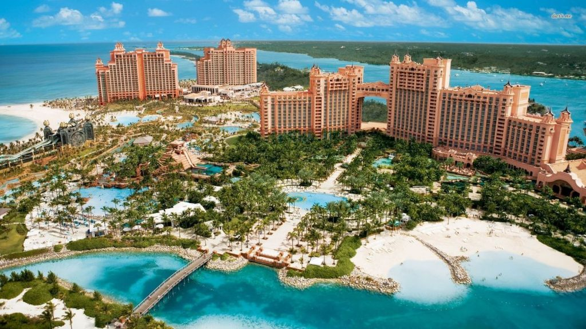
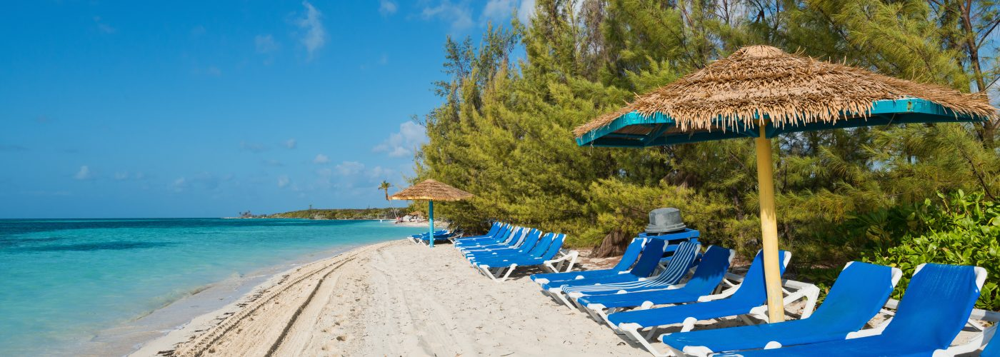

Standard – $800; Deluxe - $1200; Premium - $2000 (Per Person) Ages 2 and younger are free!

The first location we will reach is Nassau, the capital of the Bahamas. Here they have various shops, plazas, restaurants, and even an exotic water park resort called Atlantis. We will be at this port for two days, so feel free to spend a night at Atlantis Resort and enjoy their water park!
For our fourth day we will go to a private owned island called Coco Kay! This island we host a variety of excursions for all our guests. One excursion we host for everyone is our snorkeling adventure we have at the local coral reef. For other excursions you can do (rates may apply): parasailing, fishing dock, scuba diving, and dining at our TikiTiki Hut Restaurant.

For our deluxe and premium guests, we have our exciting Sting Ray City excursion. Here we go about a mile outside of the island to an area where you can interact with a colony of native Sting Rays!